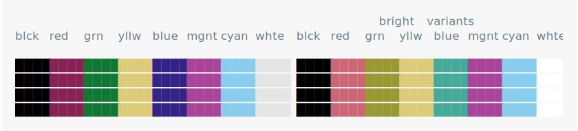
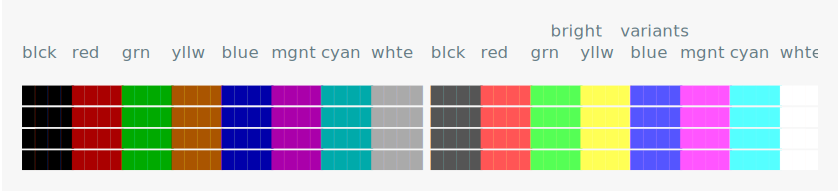

Built-in palettes
dichro
Colorblind friendly palette, from https://github.com/romainl/vim-dichromatic#dichromatic.


vga
Typical colors that are used when booting PCs and leaving them in text mode, which used a 16-entry color table. The colors are different in the EGA/VGA graphic modes. From https://en.wikipedia.org/wiki/ANSI_escape_code#SGR.


winxp
Windows XP Console. Seen in Windows XP through Windows 8.1. From https://en.wikipedia.org/wiki/ANSI_escape_code#SGR.


vscode
Visual Studio Debug console, ‘Dark+’ theme. From https://en.wikipedia.org/wiki/ANSI_escape_code#SGR.


win10
Campbell theme, used as of Windows 10 version 1709. Also usedby PowerShell 6.From https://en.wikipedia.org/wiki/ANSI_escape_code#SGR.


mirc
From https://en.wikipedia.org/wiki/ANSI_escape_code#SGR.

#| mirc-dark,
#| R.options = modifyList(.cast_opts, list(asciicast_theme = "solarized-dark"))
ansi_palette_show("mirc", colors = truecolor)

ubuntu
For virtual terminals, from /etc/vtrgb.From https://en.wikipedia.org/wiki/ANSI_escape_code#SGR.


iterm-tango
Built-In iTerm2 theme.

#| iterm--tango-dark,
#| R.options = modifyList(.cast_opts, list(asciicast_theme = "solarized-dark"))
ansi_palette_show("iterm-tango", colors = truecolor)